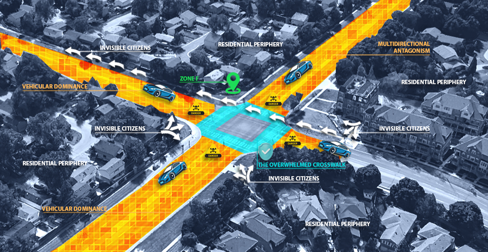

LENS 04 // ENV. DEPRIVATION
The Arterial Wall
The high-speed commuter traffic on Dixie Road creates an arterial wall. Signal timing is optimized for vehicles, severing the school zone from neighborhoods.
LOG: MACHINE SPACE
Crosswalk signal duration: 25s. Required child crossing time: 35s. Children often trapped in medians for multiple cycles.
Crosswalk signal duration: 25s. Required child crossing time: 35s. Children often trapped in medians for multiple cycles.


ANALYSIS: THE DANGER ZONELOC: DIXIE RD